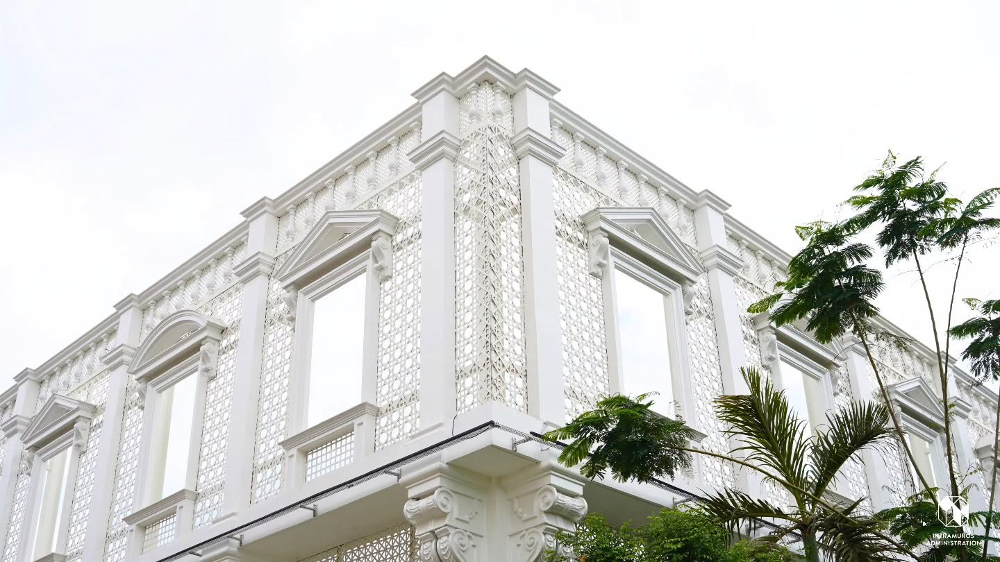
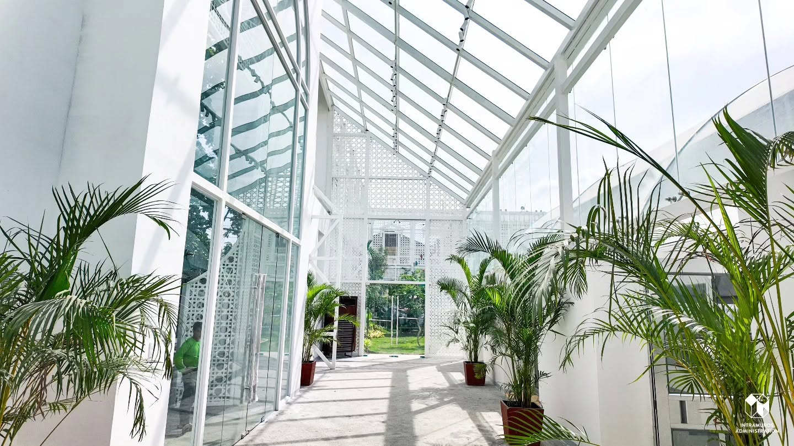
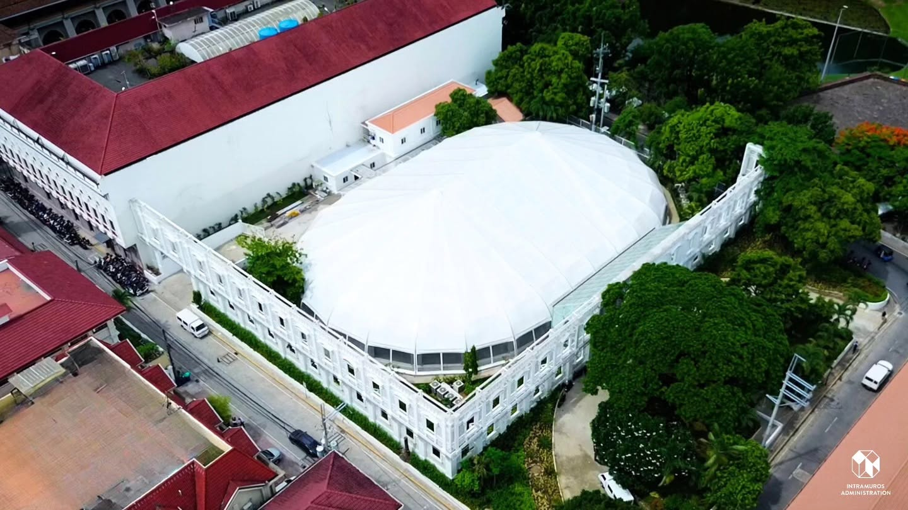
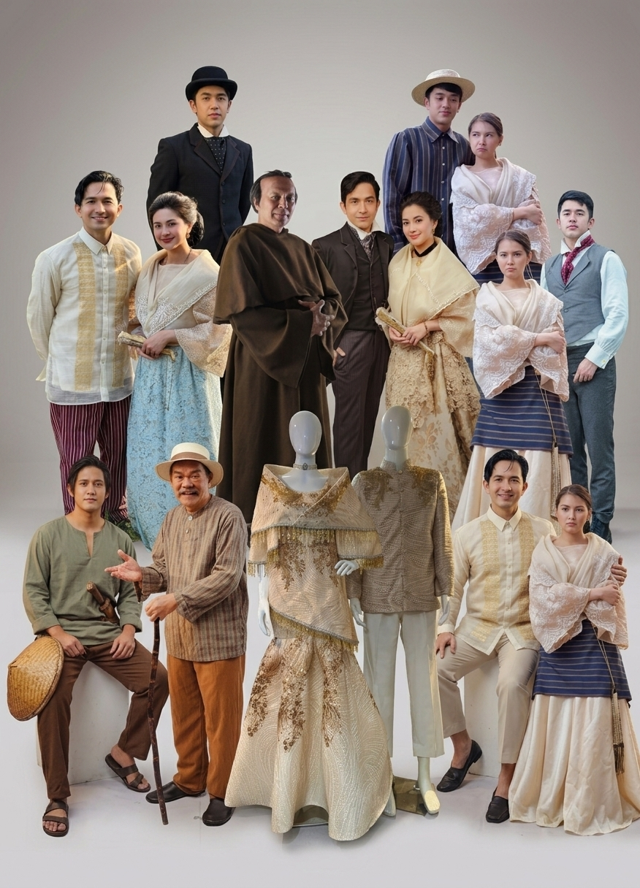

Foro de Intramuros • Calle Arzobispo corner Anda St., Manila
📅 DECEMBER 14, 2026 | LUNES | ⏰ 6:00 PM
Ilagay ang iyong lokasyon o i-click ang GPS upang makita ang direktang ruta sa mismong mapa sa ibaba!

Klasikong Harapan ng Gusali

Bulwagan at Liwanag sa Loob

Kabuuan ng Lugar (Aerial View)
Upang mas maging angkop sa ating temang makasaysayan, hinihimok ang lahat na dumalo suot ang mga sumusunod na istilo:

Barong Tagalog, Filipiniana, at iba pang Historic / Vintage Look